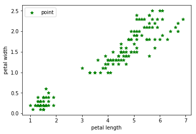
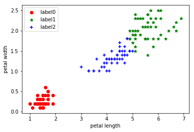
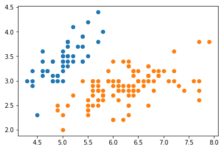

- Kmean聚类
以下使用的是sklearn自带的鸢尾花数据集
1 | import numpy as np |
1 | ##加载数据集 |
1 | import pandas as pd |
1 | np.array(iris) |
array({'target_names': array(['setosa', 'versicolor', 'virginica'],
dtype='|S10'), 'data': array([[ 5.1, 3.5, 1.4, 0.2],
[ 4.9, 3. , 1.4, 0.2],
[ 4.7, 3.2, 1.3, 0.2],
[ 4.6, 3.1, 1.5, 0.2],
[ 5. , 3.6, 1.4, 0.2],
[ 5.4, 3.9, 1.7, 0.4],
[ 4.6, 3.4, 1.4, 0.3],
[ 5. , 3.4, 1.5, 0.2],
[ 4.4, 2.9, 1.4, 0.2],
[ 4.9, 3.1, 1.5, 0.1],
[ 5.4, 3.7, 1.5, 0.2],
[ 4.8, 3.4, 1.6, 0.2],
[ 4.8, 3. , 1.4, 0.1],
[ 4.3, 3. , 1.1, 0.1],
[ 5.8, 4. , 1.2, 0.2],
[ 5.7, 4.4, 1.5, 0.4],
[ 5.4, 3.9, 1.3, 0.4],
[ 5.1, 3.5, 1.4, 0.3],
[ 5.7, 3.8, 1.7, 0.3],
[ 5.1, 3.8, 1.5, 0.3],
[ 5.4, 3.4, 1.7, 0.2],
[ 5.1, 3.7, 1.5, 0.4],
[ 4.6, 3.6, 1. , 0.2],
[ 5.1, 3.3, 1.7, 0.5],
[ 4.8, 3.4, 1.9, 0.2],
[ 5. , 3. , 1.6, 0.2],
[ 5. , 3.4, 1.6, 0.4],
[ 5.2, 3.5, 1.5, 0.2],
[ 5.2, 3.4, 1.4, 0.2],
[ 4.7, 3.2, 1.6, 0.2],
[ 4.8, 3.1, 1.6, 0.2],
[ 5.4, 3.4, 1.5, 0.4],
[ 5.2, 4.1, 1.5, 0.1],
[ 5.5, 4.2, 1.4, 0.2],
[ 4.9, 3.1, 1.5, 0.1],
[ 5. , 3.2, 1.2, 0.2],
[ 5.5, 3.5, 1.3, 0.2],
[ 4.9, 3.1, 1.5, 0.1],
[ 4.4, 3. , 1.3, 0.2],
[ 5.1, 3.4, 1.5, 0.2],
[ 5. , 3.5, 1.3, 0.3],
[ 4.5, 2.3, 1.3, 0.3],
[ 4.4, 3.2, 1.3, 0.2],
[ 5. , 3.5, 1.6, 0.6],
[ 5.1, 3.8, 1.9, 0.4],
[ 4.8, 3. , 1.4, 0.3],
[ 5.1, 3.8, 1.6, 0.2],
[ 4.6, 3.2, 1.4, 0.2],
[ 5.3, 3.7, 1.5, 0.2],
[ 5. , 3.3, 1.4, 0.2],
[ 7. , 3.2, 4.7, 1.4],
[ 6.4, 3.2, 4.5, 1.5],
[ 6.9, 3.1, 4.9, 1.5],
[ 5.5, 2.3, 4. , 1.3],
[ 6.5, 2.8, 4.6, 1.5],
[ 5.7, 2.8, 4.5, 1.3],
[ 6.3, 3.3, 4.7, 1.6],
[ 4.9, 2.4, 3.3, 1. ],
[ 6.6, 2.9, 4.6, 1.3],
[ 5.2, 2.7, 3.9, 1.4],
[ 5. , 2. , 3.5, 1. ],
[ 5.9, 3. , 4.2, 1.5],
[ 6. , 2.2, 4. , 1. ],
[ 6.1, 2.9, 4.7, 1.4],
[ 5.6, 2.9, 3.6, 1.3],
[ 6.7, 3.1, 4.4, 1.4],
[ 5.6, 3. , 4.5, 1.5],
[ 5.8, 2.7, 4.1, 1. ],
[ 6.2, 2.2, 4.5, 1.5],
[ 5.6, 2.5, 3.9, 1.1],
[ 5.9, 3.2, 4.8, 1.8],
[ 6.1, 2.8, 4. , 1.3],
[ 6.3, 2.5, 4.9, 1.5],
[ 6.1, 2.8, 4.7, 1.2],
[ 6.4, 2.9, 4.3, 1.3],
[ 6.6, 3. , 4.4, 1.4],
[ 6.8, 2.8, 4.8, 1.4],
[ 6.7, 3. , 5. , 1.7],
[ 6. , 2.9, 4.5, 1.5],
[ 5.7, 2.6, 3.5, 1. ],
[ 5.5, 2.4, 3.8, 1.1],
[ 5.5, 2.4, 3.7, 1. ],
[ 5.8, 2.7, 3.9, 1.2],
[ 6. , 2.7, 5.1, 1.6],
[ 5.4, 3. , 4.5, 1.5],
[ 6. , 3.4, 4.5, 1.6],
[ 6.7, 3.1, 4.7, 1.5],
[ 6.3, 2.3, 4.4, 1.3],
[ 5.6, 3. , 4.1, 1.3],
[ 5.5, 2.5, 4. , 1.3],
[ 5.5, 2.6, 4.4, 1.2],
[ 6.1, 3. , 4.6, 1.4],
[ 5.8, 2.6, 4. , 1.2],
[ 5. , 2.3, 3.3, 1. ],
[ 5.6, 2.7, 4.2, 1.3],
[ 5.7, 3. , 4.2, 1.2],
[ 5.7, 2.9, 4.2, 1.3],
[ 6.2, 2.9, 4.3, 1.3],
[ 5.1, 2.5, 3. , 1.1],
[ 5.7, 2.8, 4.1, 1.3],
[ 6.3, 3.3, 6. , 2.5],
[ 5.8, 2.7, 5.1, 1.9],
[ 7.1, 3. , 5.9, 2.1],
[ 6.3, 2.9, 5.6, 1.8],
[ 6.5, 3. , 5.8, 2.2],
[ 7.6, 3. , 6.6, 2.1],
[ 4.9, 2.5, 4.5, 1.7],
[ 7.3, 2.9, 6.3, 1.8],
[ 6.7, 2.5, 5.8, 1.8],
[ 7.2, 3.6, 6.1, 2.5],
[ 6.5, 3.2, 5.1, 2. ],
[ 6.4, 2.7, 5.3, 1.9],
[ 6.8, 3. , 5.5, 2.1],
[ 5.7, 2.5, 5. , 2. ],
[ 5.8, 2.8, 5.1, 2.4],
[ 6.4, 3.2, 5.3, 2.3],
[ 6.5, 3. , 5.5, 1.8],
[ 7.7, 3.8, 6.7, 2.2],
[ 7.7, 2.6, 6.9, 2.3],
[ 6. , 2.2, 5. , 1.5],
[ 6.9, 3.2, 5.7, 2.3],
[ 5.6, 2.8, 4.9, 2. ],
[ 7.7, 2.8, 6.7, 2. ],
[ 6.3, 2.7, 4.9, 1.8],
[ 6.7, 3.3, 5.7, 2.1],
[ 7.2, 3.2, 6. , 1.8],
[ 6.2, 2.8, 4.8, 1.8],
[ 6.1, 3. , 4.9, 1.8],
[ 6.4, 2.8, 5.6, 2.1],
[ 7.2, 3. , 5.8, 1.6],
[ 7.4, 2.8, 6.1, 1.9],
[ 7.9, 3.8, 6.4, 2. ],
[ 6.4, 2.8, 5.6, 2.2],
[ 6.3, 2.8, 5.1, 1.5],
[ 6.1, 2.6, 5.6, 1.4],
[ 7.7, 3. , 6.1, 2.3],
[ 6.3, 3.4, 5.6, 2.4],
[ 6.4, 3.1, 5.5, 1.8],
[ 6. , 3. , 4.8, 1.8],
[ 6.9, 3.1, 5.4, 2.1],
[ 6.7, 3.1, 5.6, 2.4],
[ 6.9, 3.1, 5.1, 2.3],
[ 5.8, 2.7, 5.1, 1.9],
[ 6.8, 3.2, 5.9, 2.3],
[ 6.7, 3.3, 5.7, 2.5],
[ 6.7, 3. , 5.2, 2.3],
[ 6.3, 2.5, 5. , 1.9],
[ 6.5, 3. , 5.2, 2. ],
[ 6.2, 3.4, 5.4, 2.3],
[ 5.9, 3. , 5.1, 1.8]]), 'target': array([0, 0, 0, 0, 0, 0, 0, 0, 0, 0, 0, 0, 0, 0, 0, 0, 0, 0, 0, 0, 0, 0, 0,
0, 0, 0, 0, 0, 0, 0, 0, 0, 0, 0, 0, 0, 0, 0, 0, 0, 0, 0, 0, 0, 0, 0,
0, 0, 0, 0, 1, 1, 1, 1, 1, 1, 1, 1, 1, 1, 1, 1, 1, 1, 1, 1, 1, 1, 1,
1, 1, 1, 1, 1, 1, 1, 1, 1, 1, 1, 1, 1, 1, 1, 1, 1, 1, 1, 1, 1, 1, 1,
1, 1, 1, 1, 1, 1, 1, 1, 2, 2, 2, 2, 2, 2, 2, 2, 2, 2, 2, 2, 2, 2, 2,
2, 2, 2, 2, 2, 2, 2, 2, 2, 2, 2, 2, 2, 2, 2, 2, 2, 2, 2, 2, 2, 2, 2,
2, 2, 2, 2, 2, 2, 2, 2, 2, 2, 2, 2]), 'DESCR': 'Iris Plants Database\n====================\n\nNotes\n-----\nData Set Characteristics:\n :Number of Instances: 150 (50 in each of three classes)\n :Number of Attributes: 4 numeric, predictive attributes and the class\n :Attribute Information:\n - sepal length in cm\n - sepal width in cm\n - petal length in cm\n - petal width in cm\n - class:\n - Iris-Setosa\n - Iris-Versicolour\n - Iris-Virginica\n :Summary Statistics:\n\n ============== ==== ==== ======= ===== ====================\n Min Max Mean SD Class Correlation\n ============== ==== ==== ======= ===== ====================\n sepal length: 4.3 7.9 5.84 0.83 0.7826\n sepal width: 2.0 4.4 3.05 0.43 -0.4194\n petal length: 1.0 6.9 3.76 1.76 0.9490 (high!)\n petal width: 0.1 2.5 1.20 0.76 0.9565 (high!)\n ============== ==== ==== ======= ===== ====================\n\n :Missing Attribute Values: None\n :Class Distribution: 33.3% for each of 3 classes.\n :Creator: R.A. Fisher\n :Donor: Michael Marshall (MARSHALL%PLU@io.arc.nasa.gov)\n :Date: July, 1988\n\nThis is a copy of UCI ML iris datasets.\nhttp://archive.ics.uci.edu/ml/datasets/Iris\n\nThe famous Iris database, first used by Sir R.A Fisher\n\nThis is perhaps the best known database to be found in the\npattern recognition literature. Fisher\'s paper is a classic in the field and\nis referenced frequently to this day. (See Duda & Hart, for example.) The\ndata set contains 3 classes of 50 instances each, where each class refers to a\ntype of iris plant. One class is linearly separable from the other 2; the\nlatter are NOT linearly separable from each other.\n\nReferences\n----------\n - Fisher,R.A. "The use of multiple measurements in taxonomic problems"\n Annual Eugenics, 7, Part II, 179-188 (1936); also in "Contributions to\n Mathematical Statistics" (John Wiley, NY, 1950).\n - Duda,R.O., & Hart,P.E. (1973) Pattern Classification and Scene Analysis.\n (Q327.D83) John Wiley & Sons. ISBN 0-471-22361-1. See page 218.\n - Dasarathy, B.V. (1980) "Nosing Around the Neighborhood: A New System\n Structure and Classification Rule for Recognition in Partially Exposed\n Environments". IEEE Transactions on Pattern Analysis and Machine\n Intelligence, Vol. PAMI-2, No. 1, 67-71.\n - Gates, G.W. (1972) "The Reduced Nearest Neighbor Rule". IEEE Transactions\n on Information Theory, May 1972, 431-433.\n - See also: 1988 MLC Proceedings, 54-64. Cheeseman et al"s AUTOCLASS II\n conceptual clustering system finds 3 classes in the data.\n - Many, many more ...\n', 'feature_names': ['sepal length (cm)', 'sepal width (cm)', 'petal length (cm)', 'petal width (cm)']}, dtype=object)
1 | X = iris.data[:, 2:4] ##表示我们只取特征空间中的后两个维度 |
1 | X |
array([[ 1.4, 0.2],
[ 1.4, 0.2],
[ 1.3, 0.2],
[ 1.5, 0.2],
[ 1.4, 0.2],
[ 1.7, 0.4],
[ 1.4, 0.3],
[ 1.5, 0.2],
[ 1.4, 0.2],
[ 1.5, 0.1],
[ 1.5, 0.2],
[ 1.6, 0.2],
[ 1.4, 0.1],
[ 1.1, 0.1],
[ 1.2, 0.2],
[ 1.5, 0.4],
[ 1.3, 0.4],
[ 1.4, 0.3],
[ 1.7, 0.3],
[ 1.5, 0.3],
[ 1.7, 0.2],
[ 1.5, 0.4],
[ 1. , 0.2],
[ 1.7, 0.5],
[ 1.9, 0.2],
[ 1.6, 0.2],
[ 1.6, 0.4],
[ 1.5, 0.2],
[ 1.4, 0.2],
[ 1.6, 0.2],
[ 1.6, 0.2],
[ 1.5, 0.4],
[ 1.5, 0.1],
[ 1.4, 0.2],
[ 1.5, 0.1],
[ 1.2, 0.2],
[ 1.3, 0.2],
[ 1.5, 0.1],
[ 1.3, 0.2],
[ 1.5, 0.2],
[ 1.3, 0.3],
[ 1.3, 0.3],
[ 1.3, 0.2],
[ 1.6, 0.6],
[ 1.9, 0.4],
[ 1.4, 0.3],
[ 1.6, 0.2],
[ 1.4, 0.2],
[ 1.5, 0.2],
[ 1.4, 0.2],
[ 4.7, 1.4],
[ 4.5, 1.5],
[ 4.9, 1.5],
[ 4. , 1.3],
[ 4.6, 1.5],
[ 4.5, 1.3],
[ 4.7, 1.6],
[ 3.3, 1. ],
[ 4.6, 1.3],
[ 3.9, 1.4],
[ 3.5, 1. ],
[ 4.2, 1.5],
[ 4. , 1. ],
[ 4.7, 1.4],
[ 3.6, 1.3],
[ 4.4, 1.4],
[ 4.5, 1.5],
[ 4.1, 1. ],
[ 4.5, 1.5],
[ 3.9, 1.1],
[ 4.8, 1.8],
[ 4. , 1.3],
[ 4.9, 1.5],
[ 4.7, 1.2],
[ 4.3, 1.3],
[ 4.4, 1.4],
[ 4.8, 1.4],
[ 5. , 1.7],
[ 4.5, 1.5],
[ 3.5, 1. ],
[ 3.8, 1.1],
[ 3.7, 1. ],
[ 3.9, 1.2],
[ 5.1, 1.6],
[ 4.5, 1.5],
[ 4.5, 1.6],
[ 4.7, 1.5],
[ 4.4, 1.3],
[ 4.1, 1.3],
[ 4. , 1.3],
[ 4.4, 1.2],
[ 4.6, 1.4],
[ 4. , 1.2],
[ 3.3, 1. ],
[ 4.2, 1.3],
[ 4.2, 1.2],
[ 4.2, 1.3],
[ 4.3, 1.3],
[ 3. , 1.1],
[ 4.1, 1.3],
[ 6. , 2.5],
[ 5.1, 1.9],
[ 5.9, 2.1],
[ 5.6, 1.8],
[ 5.8, 2.2],
[ 6.6, 2.1],
[ 4.5, 1.7],
[ 6.3, 1.8],
[ 5.8, 1.8],
[ 6.1, 2.5],
[ 5.1, 2. ],
[ 5.3, 1.9],
[ 5.5, 2.1],
[ 5. , 2. ],
[ 5.1, 2.4],
[ 5.3, 2.3],
[ 5.5, 1.8],
[ 6.7, 2.2],
[ 6.9, 2.3],
[ 5. , 1.5],
[ 5.7, 2.3],
[ 4.9, 2. ],
[ 6.7, 2. ],
[ 4.9, 1.8],
[ 5.7, 2.1],
[ 6. , 1.8],
[ 4.8, 1.8],
[ 4.9, 1.8],
[ 5.6, 2.1],
[ 5.8, 1.6],
[ 6.1, 1.9],
[ 6.4, 2. ],
[ 5.6, 2.2],
[ 5.1, 1.5],
[ 5.6, 1.4],
[ 6.1, 2.3],
[ 5.6, 2.4],
[ 5.5, 1.8],
[ 4.8, 1.8],
[ 5.4, 2.1],
[ 5.6, 2.4],
[ 5.1, 2.3],
[ 5.1, 1.9],
[ 5.9, 2.3],
[ 5.7, 2.5],
[ 5.2, 2.3],
[ 5. , 1.9],
[ 5.2, 2. ],
[ 5.4, 2.3],
[ 5.1, 1.8]])
1 | #绘制数据分布图 |

1 | estimator = KMeans(n_clusters=3)#构造聚类器 |
1 | label_pred |
array([0, 0, 0, 0, 0, 0, 0, 0, 0, 0, 0, 0, 0, 0, 0, 0, 0, 0, 0, 0, 0, 0, 0,
0, 0, 0, 0, 0, 0, 0, 0, 0, 0, 0, 0, 0, 0, 0, 0, 0, 0, 0, 0, 0, 0, 0,
0, 0, 0, 0, 2, 2, 2, 2, 2, 2, 2, 2, 2, 2, 2, 2, 2, 2, 2, 2, 2, 2, 2,
2, 2, 2, 2, 2, 2, 2, 2, 1, 2, 2, 2, 2, 2, 1, 2, 2, 2, 2, 2, 2, 2, 2,
2, 2, 2, 2, 2, 2, 2, 2, 1, 1, 1, 1, 1, 1, 2, 1, 1, 1, 1, 1, 1, 1, 1,
1, 1, 1, 1, 2, 1, 1, 1, 1, 1, 1, 2, 1, 1, 1, 1, 1, 1, 1, 1, 1, 1, 1,
2, 1, 1, 1, 1, 1, 1, 1, 1, 1, 1, 1], dtype=int32)
1 | #绘制k-means结果 |

1 | X.shape |
(150, 2)
1 | X=X.tolist() |
1 | X |
[[1.4, 0.2],
[1.4, 0.2],
[1.3, 0.2],
[1.5, 0.2],
[1.4, 0.2],
[1.7, 0.4],
[1.4, 0.3],
[1.5, 0.2],
[1.4, 0.2],
[1.5, 0.1],
[1.5, 0.2],
[1.6, 0.2],
[1.4, 0.1],
[1.1, 0.1],
[1.2, 0.2],
[1.5, 0.4],
[1.3, 0.4],
[1.4, 0.3],
[1.7, 0.3],
[1.5, 0.3],
[1.7, 0.2],
[1.5, 0.4],
[1.0, 0.2],
[1.7, 0.5],
[1.9, 0.2],
[1.6, 0.2],
[1.6, 0.4],
[1.5, 0.2],
[1.4, 0.2],
[1.6, 0.2],
[1.6, 0.2],
[1.5, 0.4],
[1.5, 0.1],
[1.4, 0.2],
[1.5, 0.1],
[1.2, 0.2],
[1.3, 0.2],
[1.5, 0.1],
[1.3, 0.2],
[1.5, 0.2],
[1.3, 0.3],
[1.3, 0.3],
[1.3, 0.2],
[1.6, 0.6],
[1.9, 0.4],
[1.4, 0.3],
[1.6, 0.2],
[1.4, 0.2],
[1.5, 0.2],
[1.4, 0.2],
[4.7, 1.4],
[4.5, 1.5],
[4.9, 1.5],
[4.0, 1.3],
[4.6, 1.5],
[4.5, 1.3],
[4.7, 1.6],
[3.3, 1.0],
[4.6, 1.3],
[3.9, 1.4],
[3.5, 1.0],
[4.2, 1.5],
[4.0, 1.0],
[4.7, 1.4],
[3.6, 1.3],
[4.4, 1.4],
[4.5, 1.5],
[4.1, 1.0],
[4.5, 1.5],
[3.9, 1.1],
[4.8, 1.8],
[4.0, 1.3],
[4.9, 1.5],
[4.7, 1.2],
[4.3, 1.3],
[4.4, 1.4],
[4.8, 1.4],
[5.0, 1.7],
[4.5, 1.5],
[3.5, 1.0],
[3.8, 1.1],
[3.7, 1.0],
[3.9, 1.2],
[5.1, 1.6],
[4.5, 1.5],
[4.5, 1.6],
[4.7, 1.5],
[4.4, 1.3],
[4.1, 1.3],
[4.0, 1.3],
[4.4, 1.2],
[4.6, 1.4],
[4.0, 1.2],
[3.3, 1.0],
[4.2, 1.3],
[4.2, 1.2],
[4.2, 1.3],
[4.3, 1.3],
[3.0, 1.1],
[4.1, 1.3],
[6.0, 2.5],
[5.1, 1.9],
[5.9, 2.1],
[5.6, 1.8],
[5.8, 2.2],
[6.6, 2.1],
[4.5, 1.7],
[6.3, 1.8],
[5.8, 1.8],
[6.1, 2.5],
[5.1, 2.0],
[5.3, 1.9],
[5.5, 2.1],
[5.0, 2.0],
[5.1, 2.4],
[5.3, 2.3],
[5.5, 1.8],
[6.7, 2.2],
[6.9, 2.3],
[5.0, 1.5],
[5.7, 2.3],
[4.9, 2.0],
[6.7, 2.0],
[4.9, 1.8],
[5.7, 2.1],
[6.0, 1.8],
[4.8, 1.8],
[4.9, 1.8],
[5.6, 2.1],
[5.8, 1.6],
[6.1, 1.9],
[6.4, 2.0],
[5.6, 2.2],
[5.1, 1.5],
[5.6, 1.4],
[6.1, 2.3],
[5.6, 2.4],
[5.5, 1.8],
[4.8, 1.8],
[5.4, 2.1],
[5.6, 2.4],
[5.1, 2.3],
[5.1, 1.9],
[5.9, 2.3],
[5.7, 2.5],
[5.2, 2.3],
[5.0, 1.9],
[5.2, 2.0],
[5.4, 2.3],
[5.1, 1.8]]
1 | cluster_result=[] |
1 | cluster_result |
[[1.4, 0.2, 0],
[1.4, 0.2, 0],
[1.3, 0.2, 0],
[1.5, 0.2, 0],
[1.4, 0.2, 0],
[1.7, 0.4, 0],
[1.4, 0.3, 0],
[1.5, 0.2, 0],
[1.4, 0.2, 0],
[1.5, 0.1, 0],
[1.5, 0.2, 0],
[1.6, 0.2, 0],
[1.4, 0.1, 0],
[1.1, 0.1, 0],
[1.2, 0.2, 0],
[1.5, 0.4, 0],
[1.3, 0.4, 0],
[1.4, 0.3, 0],
[1.7, 0.3, 0],
[1.5, 0.3, 0],
[1.7, 0.2, 0],
[1.5, 0.4, 0],
[1.0, 0.2, 0],
[1.7, 0.5, 0],
[1.9, 0.2, 0],
[1.6, 0.2, 0],
[1.6, 0.4, 0],
[1.5, 0.2, 0],
[1.4, 0.2, 0],
[1.6, 0.2, 0],
[1.6, 0.2, 0],
[1.5, 0.4, 0],
[1.5, 0.1, 0],
[1.4, 0.2, 0],
[1.5, 0.1, 0],
[1.2, 0.2, 0],
[1.3, 0.2, 0],
[1.5, 0.1, 0],
[1.3, 0.2, 0],
[1.5, 0.2, 0],
[1.3, 0.3, 0],
[1.3, 0.3, 0],
[1.3, 0.2, 0],
[1.6, 0.6, 0],
[1.9, 0.4, 0],
[1.4, 0.3, 0],
[1.6, 0.2, 0],
[1.4, 0.2, 0],
[1.5, 0.2, 0],
[1.4, 0.2, 0],
[4.7, 1.4, 2],
[4.5, 1.5, 2],
[4.9, 1.5, 2],
[4.0, 1.3, 2],
[4.6, 1.5, 2],
[4.5, 1.3, 2],
[4.7, 1.6, 2],
[3.3, 1.0, 2],
[4.6, 1.3, 2],
[3.9, 1.4, 2],
[3.5, 1.0, 2],
[4.2, 1.5, 2],
[4.0, 1.0, 2],
[4.7, 1.4, 2],
[3.6, 1.3, 2],
[4.4, 1.4, 2],
[4.5, 1.5, 2],
[4.1, 1.0, 2],
[4.5, 1.5, 2],
[3.9, 1.1, 2],
[4.8, 1.8, 2],
[4.0, 1.3, 2],
[4.9, 1.5, 2],
[4.7, 1.2, 2],
[4.3, 1.3, 2],
[4.4, 1.4, 2],
[4.8, 1.4, 2],
[5.0, 1.7, 1],
[4.5, 1.5, 2],
[3.5, 1.0, 2],
[3.8, 1.1, 2],
[3.7, 1.0, 2],
[3.9, 1.2, 2],
[5.1, 1.6, 1],
[4.5, 1.5, 2],
[4.5, 1.6, 2],
[4.7, 1.5, 2],
[4.4, 1.3, 2],
[4.1, 1.3, 2],
[4.0, 1.3, 2],
[4.4, 1.2, 2],
[4.6, 1.4, 2],
[4.0, 1.2, 2],
[3.3, 1.0, 2],
[4.2, 1.3, 2],
[4.2, 1.2, 2],
[4.2, 1.3, 2],
[4.3, 1.3, 2],
[3.0, 1.1, 2],
[4.1, 1.3, 2],
[6.0, 2.5, 1],
[5.1, 1.9, 1],
[5.9, 2.1, 1],
[5.6, 1.8, 1],
[5.8, 2.2, 1],
[6.6, 2.1, 1],
[4.5, 1.7, 2],
[6.3, 1.8, 1],
[5.8, 1.8, 1],
[6.1, 2.5, 1],
[5.1, 2.0, 1],
[5.3, 1.9, 1],
[5.5, 2.1, 1],
[5.0, 2.0, 1],
[5.1, 2.4, 1],
[5.3, 2.3, 1],
[5.5, 1.8, 1],
[6.7, 2.2, 1],
[6.9, 2.3, 1],
[5.0, 1.5, 2],
[5.7, 2.3, 1],
[4.9, 2.0, 1],
[6.7, 2.0, 1],
[4.9, 1.8, 1],
[5.7, 2.1, 1],
[6.0, 1.8, 1],
[4.8, 1.8, 2],
[4.9, 1.8, 1],
[5.6, 2.1, 1],
[5.8, 1.6, 1],
[6.1, 1.9, 1],
[6.4, 2.0, 1],
[5.6, 2.2, 1],
[5.1, 1.5, 1],
[5.6, 1.4, 1],
[6.1, 2.3, 1],
[5.6, 2.4, 1],
[5.5, 1.8, 1],
[4.8, 1.8, 2],
[5.4, 2.1, 1],
[5.6, 2.4, 1],
[5.1, 2.3, 1],
[5.1, 1.9, 1],
[5.9, 2.3, 1],
[5.7, 2.5, 1],
[5.2, 2.3, 1],
[5.0, 1.9, 1],
[5.2, 2.0, 1],
[5.4, 2.3, 1],
[5.1, 1.8, 1]]
接下来将３类数据点分别导出到csv文件
1 | #分类整合 |
现在得到的是３个list，我们将先把list转换成array，再进行导出
1 | #转化成array |
1 | #预先创建一个空的数据框 |
1 | #将第０类样本信息进行填充到之前的看破那个数据框 |
1 | #整合之后的样子 |
| feature1 | feature2 | kind | |
|---|---|---|---|
| 0 | 1.4 | 0.2 | 0.0 |
| 1 | 1.4 | 0.2 | 0.0 |
| 2 | 1.3 | 0.2 | 0.0 |
| 3 | 1.5 | 0.2 | 0.0 |
| 4 | 1.4 | 0.2 | 0.0 |
| 5 | 1.7 | 0.4 | 0.0 |
| 6 | 1.4 | 0.3 | 0.0 |
| 7 | 1.5 | 0.2 | 0.0 |
| 8 | 1.4 | 0.2 | 0.0 |
| 9 | 1.5 | 0.1 | 0.0 |
| 10 | 1.5 | 0.2 | 0.0 |
| 11 | 1.6 | 0.2 | 0.0 |
| 12 | 1.4 | 0.1 | 0.0 |
| 13 | 1.1 | 0.1 | 0.0 |
| 14 | 1.2 | 0.2 | 0.0 |
| 15 | 1.5 | 0.4 | 0.0 |
| 16 | 1.3 | 0.4 | 0.0 |
| 17 | 1.4 | 0.3 | 0.0 |
| 18 | 1.7 | 0.3 | 0.0 |
| 19 | 1.5 | 0.3 | 0.0 |
| 20 | 1.7 | 0.2 | 0.0 |
| 21 | 1.5 | 0.4 | 0.0 |
| 22 | 1.0 | 0.2 | 0.0 |
| 23 | 1.7 | 0.5 | 0.0 |
| 24 | 1.9 | 0.2 | 0.0 |
| 25 | 1.6 | 0.2 | 0.0 |
| 26 | 1.6 | 0.4 | 0.0 |
| 27 | 1.5 | 0.2 | 0.0 |
| 28 | 1.4 | 0.2 | 0.0 |
| 29 | 1.6 | 0.2 | 0.0 |
| 30 | 1.6 | 0.2 | 0.0 |
| 31 | 1.5 | 0.4 | 0.0 |
| 32 | 1.5 | 0.1 | 0.0 |
| 33 | 1.4 | 0.2 | 0.0 |
| 34 | 1.5 | 0.1 | 0.0 |
| 35 | 1.2 | 0.2 | 0.0 |
| 36 | 1.3 | 0.2 | 0.0 |
| 37 | 1.5 | 0.1 | 0.0 |
| 38 | 1.3 | 0.2 | 0.0 |
| 39 | 1.5 | 0.2 | 0.0 |
| 40 | 1.3 | 0.3 | 0.0 |
| 41 | 1.3 | 0.3 | 0.0 |
| 42 | 1.3 | 0.2 | 0.0 |
| 43 | 1.6 | 0.6 | 0.0 |
| 44 | 1.9 | 0.4 | 0.0 |
| 45 | 1.4 | 0.3 | 0.0 |
| 46 | 1.6 | 0.2 | 0.0 |
| 47 | 1.4 | 0.2 | 0.0 |
| 48 | 1.5 | 0.2 | 0.0 |
| 49 | 1.4 | 0.2 | 0.0 |
1 | #保存第０类样本信息文件 |
至于其他两类的数据导出方法也一样，这里不再赘述。
其实，可以把这个导出功能封装成一个函数，传入保存路径和第几类就可以了，当然也可以直接来个for循环解决.
到现在，我们都做了些什么呢？来总结一下：
首先，我们导入了sklearn自带的鸢尾花数据集并选取了其中两个特征(feature)，拟用这两个特征做聚类.
接着，我们调用了sklearn的聚类方法做了聚类（聚成了３类），并将样本的特征与所属类别（int）整合在一个list里面，并由外围的list包裹住，然后再将这所有的list按照所属聚类数的不同而归类存储.
最后，将归类的数据先转化成数组形式，然后做成csv文件，导出到指定目录下.
有一点值得注意的是，在可视化的时候只能用二维数据，即两个特征，受维度限制.
接下来我们再来看一个例子，同样是使用上面的数据，只不过这次采用dbscan算法
1 | from sklearn.cluster import DBSCAN |
1 | #这次使用全部特征进行聚类 |
1 | x.shape |
(150, 4)
1 | db.fit(x)#训练数据集，构建模型 |
DBSCAN(algorithm='auto', eps=1, leaf_size=30, metric='euclidean',
min_samples=10, n_jobs=1, p=None)
1 | labels=db.labels_ |
1 | labels |
array([0, 0, 0, 0, 0, 0, 0, 0, 0, 0, 0, 0, 0, 0, 0, 0, 0, 0, 0, 0, 0, 0, 0,
0, 0, 0, 0, 0, 0, 0, 0, 0, 0, 0, 0, 0, 0, 0, 0, 0, 0, 0, 0, 0, 0, 0,
0, 0, 0, 0, 1, 1, 1, 1, 1, 1, 1, 1, 1, 1, 1, 1, 1, 1, 1, 1, 1, 1, 1,
1, 1, 1, 1, 1, 1, 1, 1, 1, 1, 1, 1, 1, 1, 1, 1, 1, 1, 1, 1, 1, 1, 1,
1, 1, 1, 1, 1, 1, 1, 1, 1, 1, 1, 1, 1, 1, 1, 1, 1, 1, 1, 1, 1, 1, 1,
1, 1, 1, 1, 1, 1, 1, 1, 1, 1, 1, 1, 1, 1, 1, 1, 1, 1, 1, 1, 1, 1, 1,
1, 1, 1, 1, 1, 1, 1, 1, 1, 1, 1, 1])
1 | #噪声比率 |
1 | print "噪声比率:",ratio |
噪声比率: 0.0
1 | n_clusters_=len(set(labels)) - (1 if -1 in labels else 0) |
聚类总数为： 2
1 | from sklearn import metrics |
聚类效果评价指标： 0.766723428068
1 | #总结 |
Cluter 1 :
计数： 50
平均值 3.418
标准差 0.377194909828
Cluter 2 :
计数： 100
平均值 2.872
标准差 0.331083071147
1 | #可视化聚类结果，这里只选取前两个进行绘制,不太准确，只是拿来说明一下绘图做法 |
簇 0 的所有样本:
[[ 5.1 3.5 1.4 0.2]
[ 4.9 3. 1.4 0.2]
[ 4.7 3.2 1.3 0.2]
[ 4.6 3.1 1.5 0.2]
[ 5. 3.6 1.4 0.2]
[ 5.4 3.9 1.7 0.4]
[ 4.6 3.4 1.4 0.3]
[ 5. 3.4 1.5 0.2]
[ 4.4 2.9 1.4 0.2]
[ 4.9 3.1 1.5 0.1]
[ 5.4 3.7 1.5 0.2]
[ 4.8 3.4 1.6 0.2]
[ 4.8 3. 1.4 0.1]
[ 4.3 3. 1.1 0.1]
[ 5.8 4. 1.2 0.2]
[ 5.7 4.4 1.5 0.4]
[ 5.4 3.9 1.3 0.4]
[ 5.1 3.5 1.4 0.3]
[ 5.7 3.8 1.7 0.3]
[ 5.1 3.8 1.5 0.3]
[ 5.4 3.4 1.7 0.2]
[ 5.1 3.7 1.5 0.4]
[ 4.6 3.6 1. 0.2]
[ 5.1 3.3 1.7 0.5]
[ 4.8 3.4 1.9 0.2]
[ 5. 3. 1.6 0.2]
[ 5. 3.4 1.6 0.4]
[ 5.2 3.5 1.5 0.2]
[ 5.2 3.4 1.4 0.2]
[ 4.7 3.2 1.6 0.2]
[ 4.8 3.1 1.6 0.2]
[ 5.4 3.4 1.5 0.4]
[ 5.2 4.1 1.5 0.1]
[ 5.5 4.2 1.4 0.2]
[ 4.9 3.1 1.5 0.1]
[ 5. 3.2 1.2 0.2]
[ 5.5 3.5 1.3 0.2]
[ 4.9 3.1 1.5 0.1]
[ 4.4 3. 1.3 0.2]
[ 5.1 3.4 1.5 0.2]
[ 5. 3.5 1.3 0.3]
[ 4.5 2.3 1.3 0.3]
[ 4.4 3.2 1.3 0.2]
[ 5. 3.5 1.6 0.6]
[ 5.1 3.8 1.9 0.4]
[ 4.8 3. 1.4 0.3]
[ 5.1 3.8 1.6 0.2]
[ 4.6 3.2 1.4 0.2]
[ 5.3 3.7 1.5 0.2]
[ 5. 3.3 1.4 0.2]]
簇 1 的所有样本:
[[ 7. 3.2 4.7 1.4]
[ 6.4 3.2 4.5 1.5]
[ 6.9 3.1 4.9 1.5]
[ 5.5 2.3 4. 1.3]
[ 6.5 2.8 4.6 1.5]
[ 5.7 2.8 4.5 1.3]
[ 6.3 3.3 4.7 1.6]
[ 4.9 2.4 3.3 1. ]
[ 6.6 2.9 4.6 1.3]
[ 5.2 2.7 3.9 1.4]
[ 5. 2. 3.5 1. ]
[ 5.9 3. 4.2 1.5]
[ 6. 2.2 4. 1. ]
[ 6.1 2.9 4.7 1.4]
[ 5.6 2.9 3.6 1.3]
[ 6.7 3.1 4.4 1.4]
[ 5.6 3. 4.5 1.5]
[ 5.8 2.7 4.1 1. ]
[ 6.2 2.2 4.5 1.5]
[ 5.6 2.5 3.9 1.1]
[ 5.9 3.2 4.8 1.8]
[ 6.1 2.8 4. 1.3]
[ 6.3 2.5 4.9 1.5]
[ 6.1 2.8 4.7 1.2]
[ 6.4 2.9 4.3 1.3]
[ 6.6 3. 4.4 1.4]
[ 6.8 2.8 4.8 1.4]
[ 6.7 3. 5. 1.7]
[ 6. 2.9 4.5 1.5]
[ 5.7 2.6 3.5 1. ]
[ 5.5 2.4 3.8 1.1]
[ 5.5 2.4 3.7 1. ]
[ 5.8 2.7 3.9 1.2]
[ 6. 2.7 5.1 1.6]
[ 5.4 3. 4.5 1.5]
[ 6. 3.4 4.5 1.6]
[ 6.7 3.1 4.7 1.5]
[ 6.3 2.3 4.4 1.3]
[ 5.6 3. 4.1 1.3]
[ 5.5 2.5 4. 1.3]
[ 5.5 2.6 4.4 1.2]
[ 6.1 3. 4.6 1.4]
[ 5.8 2.6 4. 1.2]
[ 5. 2.3 3.3 1. ]
[ 5.6 2.7 4.2 1.3]
[ 5.7 3. 4.2 1.2]
[ 5.7 2.9 4.2 1.3]
[ 6.2 2.9 4.3 1.3]
[ 5.1 2.5 3. 1.1]
[ 5.7 2.8 4.1 1.3]
[ 6.3 3.3 6. 2.5]
[ 5.8 2.7 5.1 1.9]
[ 7.1 3. 5.9 2.1]
[ 6.3 2.9 5.6 1.8]
[ 6.5 3. 5.8 2.2]
[ 7.6 3. 6.6 2.1]
[ 4.9 2.5 4.5 1.7]
[ 7.3 2.9 6.3 1.8]
[ 6.7 2.5 5.8 1.8]
[ 7.2 3.6 6.1 2.5]
[ 6.5 3.2 5.1 2. ]
[ 6.4 2.7 5.3 1.9]
[ 6.8 3. 5.5 2.1]
[ 5.7 2.5 5. 2. ]
[ 5.8 2.8 5.1 2.4]
[ 6.4 3.2 5.3 2.3]
[ 6.5 3. 5.5 1.8]
[ 7.7 3.8 6.7 2.2]
[ 7.7 2.6 6.9 2.3]
[ 6. 2.2 5. 1.5]
[ 6.9 3.2 5.7 2.3]
[ 5.6 2.8 4.9 2. ]
[ 7.7 2.8 6.7 2. ]
[ 6.3 2.7 4.9 1.8]
[ 6.7 3.3 5.7 2.1]
[ 7.2 3.2 6. 1.8]
[ 6.2 2.8 4.8 1.8]
[ 6.1 3. 4.9 1.8]
[ 6.4 2.8 5.6 2.1]
[ 7.2 3. 5.8 1.6]
[ 7.4 2.8 6.1 1.9]
[ 7.9 3.8 6.4 2. ]
[ 6.4 2.8 5.6 2.2]
[ 6.3 2.8 5.1 1.5]
[ 6.1 2.6 5.6 1.4]
[ 7.7 3. 6.1 2.3]
[ 6.3 3.4 5.6 2.4]
[ 6.4 3.1 5.5 1.8]
[ 6. 3. 4.8 1.8]
[ 6.9 3.1 5.4 2.1]
[ 6.7 3.1 5.6 2.4]
[ 6.9 3.1 5.1 2.3]
[ 5.8 2.7 5.1 1.9]
[ 6.8 3.2 5.9 2.3]
[ 6.7 3.3 5.7 2.5]
[ 6.7 3. 5.2 2.3]
[ 6.3 2.5 5. 1.9]
[ 6.5 3. 5.2 2. ]
[ 6.2 3.4 5.4 2.3]
[ 5.9 3. 5.1 1.8]]

参考：
https://blog.csdn.net/luanpeng825485697/article/details/79443512
https://blog.csdn.net/linzch3/article/details/76038172
https://blog.csdn.net/u010159842/article/details/78624135
1 |